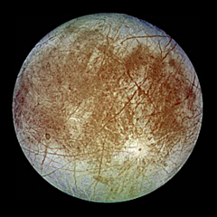

Frappe Charts
GitHub-inspired simple and modern charts for the web with zero dependencies
Click or use arrow keys to navigate data points
Creating a chart
Install
npm install frappe-chartsAnd include it in your project
import Chart from "frappe-charts/dist/frappe-charts.min.esm"... or include it directly in your HTML
<script src="https://unpkg.com/frappe-charts@0.0.8/dist/frappe-charts.min.iife.js"></script>Make a new Chart
<!--HTML-->
<div id="chart"></div> // Javascript
let data = {
labels: ["12am-3am", "3am-6am", "6am-9am", "9am-12pm",
"12pm-3pm", "3pm-6pm", "6pm-9pm", "9pm-12am"],
datasets: [
{
title: "Some Data",
values: [25, 40, 30, 35, 8, 52, 17, -4]
},
{
title: "Another Set",
values: [25, 50, -10, 15, 18, 32, 27, 14]
},
{
title: "Yet Another",
values: [15, 20, -3, -15, 58, 12, -17, 37]
}
]
};
let chart = new Chart({
parent: "#chart", // or a DOM element
title: "My Awesome Chart",
data: data,
type: 'bar', // or 'line', 'scatter', 'pie', 'percentage'
height: 250,
colors: ['#7cd6fd', 'violet', 'blue'],
// hex-codes or these preset colors;
// defaults (in order):
// ['light-blue', 'blue', 'violet', 'red',
// 'orange', 'yellow', 'green', 'light-green',
// 'purple', 'magenta', 'grey', 'dark-grey']
format_tooltip_x: d => (d + '').toUpperCase(),
format_tooltip_y: d => d + ' pts'
});Update values
// Update entire datasets
chart.update_values(
[
{values: new_dataset_1_values},
{values: new_dataset_2_values}
],
new_labels
);
// Add a new data point
chart.add_data_point(
[new_value_1, new_value_2],
new_label,
index // defaults to last index
);
// Remove a data point
chart.remove_data_point(index); ...
// Include specific Y values in input data to be displayed as lines
// (before passing data to a new chart):
data.specific_values = [
{
title: "Altitude",
line_type: "dashed", // or "solid"
value: 38
}
]
...Plot trends
...
x_axis_mode: 'tick', // for short label ticks
// or 'span' for long spanning vertical axis lines
y_axis_mode: 'span', // for long horizontal lines, or 'tick'
is_series: 1, // to allow for skipping of X values
... ...
type: 'line', // Line Chart specific properties:
show_dots: 0, // Show data points on the line; default 1
heatline: 1, // Show a value-wise line gradient; default 0
region_fill: 1, // Fill the area under the graph; default 0
...Listen to state change

Europa
Semi-major-axis: 671034 km
Mass: 4800000 x 10^16 kg
Diameter: 3121.6 km
Simple Aggregations
chart.show_sums(); // and `hide_sums()`
chart.show_averages(); // and `hide_averages()`And a Month-wise Heatmap
let heatmap = new Chart({
parent: "#heatmap",
type: 'heatmap',
height: 115,
data: heatmap_data, // object with date/timestamp-value pairs
discrete_domains: 1 // default: 0
start: start_date,
// A Date object;
// default: today's date in past year
// for an annual heatmap
legend_colors: ['#ebedf0', '#fdf436', '#ffc700', '#ff9100', '#06001c'],
// Set of five incremental colors,
// beginning with a low-saturation color for zero data;
// default: ['#ebedf0', '#c6e48b', '#7bc96f', '#239a3b', '#196127']
});License: MIT